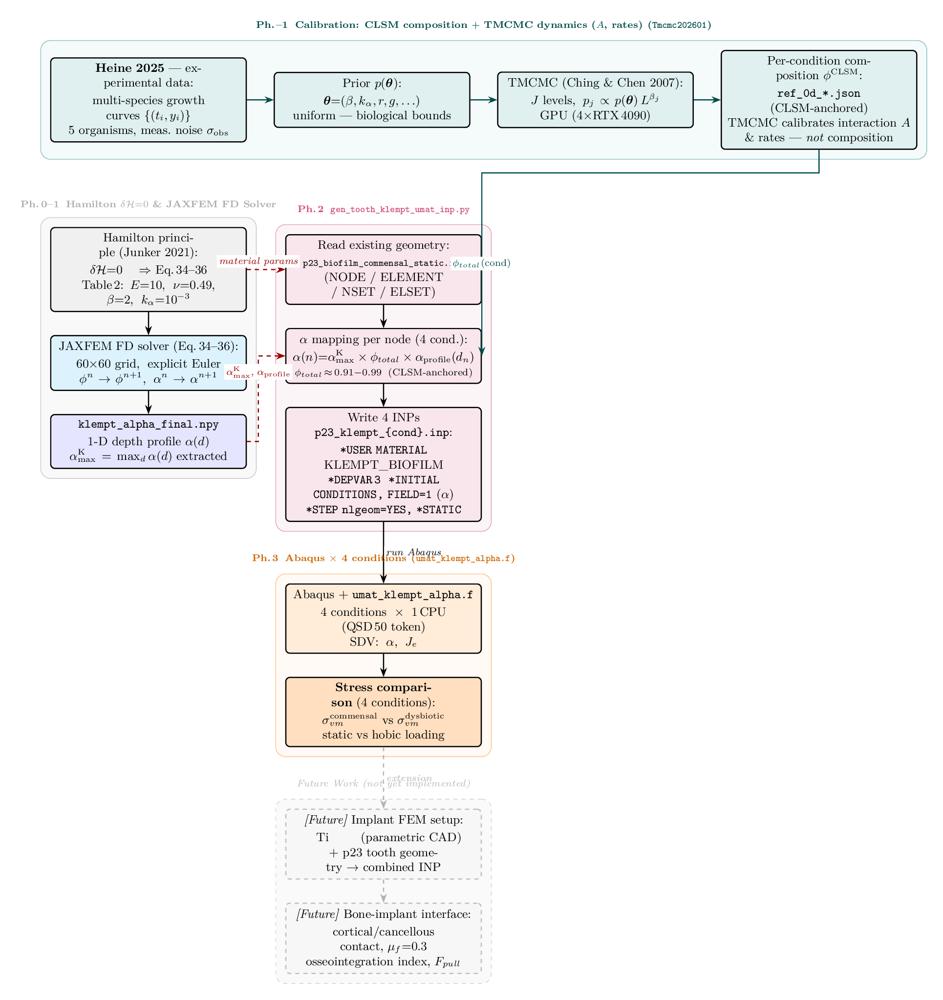
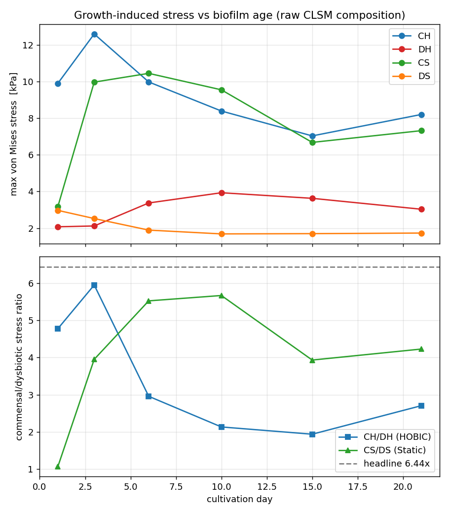
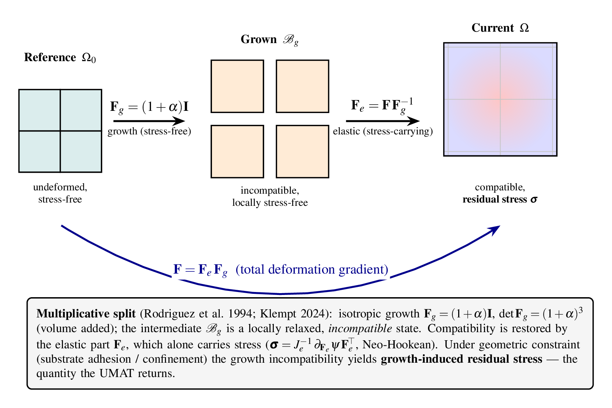
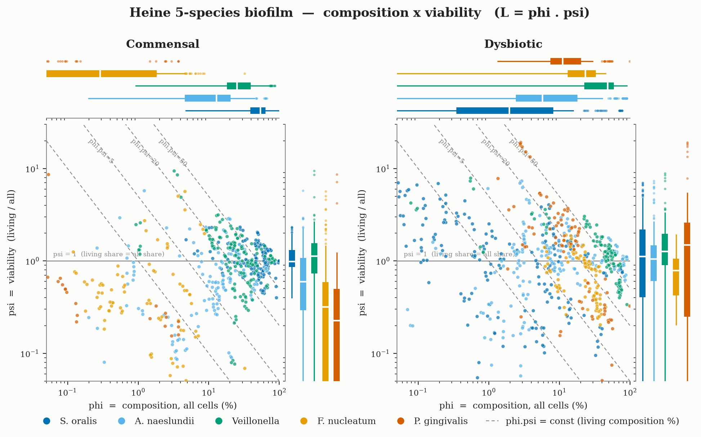
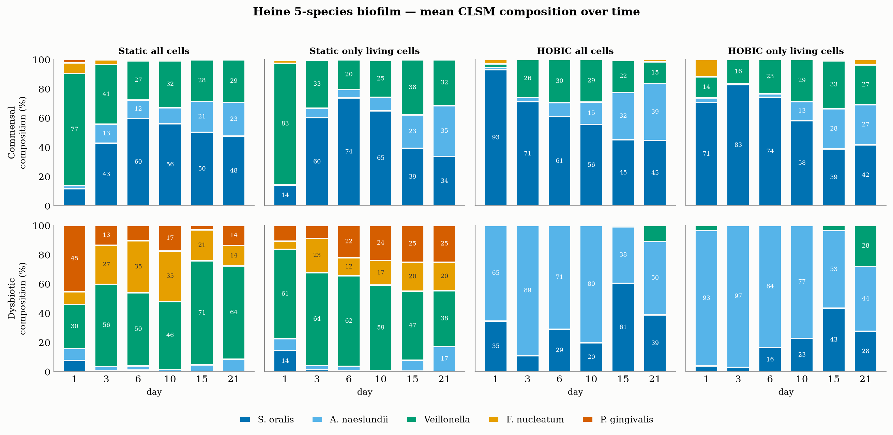
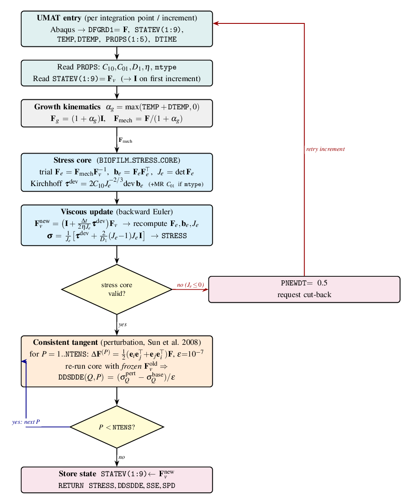
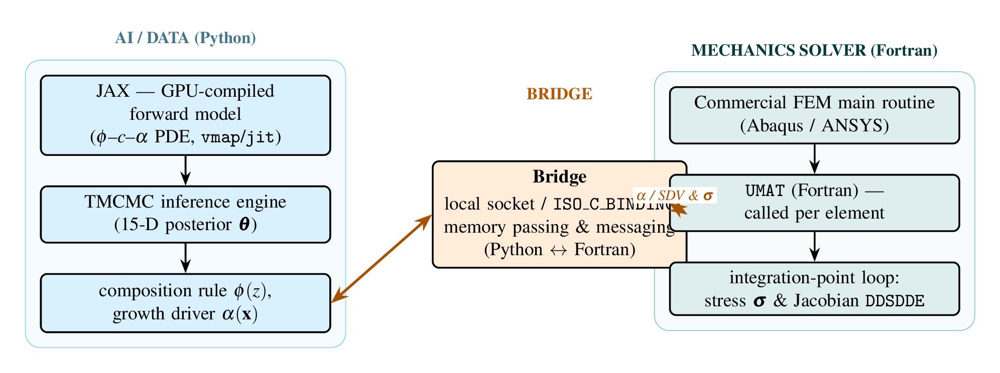
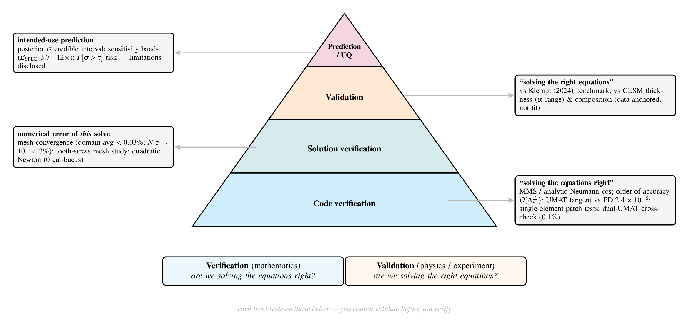

Computational biomechanics · master's thesis code
口腔バイオフィルムの連続体成長モデル（Klempt 2024）に基づく 3D 有限要素応力解析
A reproducible pipeline that turns TMCMC-calibrated 5-species ecology and CLSM-measured composition into condition-resolved mechanical stress on tooth & implant geometry.
Companion code for the LUH / IKM master's thesis and the Nishioka–Heine biofilm paper.
Dental biofilms grow, and growth builds mechanical stress at the tooth interface. This project models that chain end to end: a calibrated ecological model gives the species composition over time, composition sets a spatial growth field, and a finite-element solver with a custom constitutive law turns growth into a resolved von Mises stress — compared across four clinical conditions (commensal / dysbiotic × HOBIC / static).
The emphasis throughout is rigor: every constitutive claim is verified (consistent tangents, mesh convergence, a dual-solver cross-check), and every uncertain input is reported as a sensitivity band rather than a single number.
CLSM composition → growth field → FEM with the Klempt growth UMAT → stress ratio.

F = Fe·Fg, Fg = (1+α)I → four-condition
von Mises stress comparison.
early-biofilm stress ratio σCH/σDH. Robust to the depth/nutrient model (5.3–6.6× via 3D reaction–diffusion), reported with its sensitivity band to per-species stiffness.
Mechanics, image/data analysis, and verification figures from the repository.

F = Fe·Fg with isotropic growth Fg = (1+α)I —
the mechanical basis of the model.
L = φ·ψ from CLSM data — log–log joint plot with
constant-product diagonals and marginal IQR boxplots per species.



The constitutive law is proven — including across two independent solvers.
The biofilm material model was ported from a verified Abaqus UMAT
to an ANSYS USERMAT. An adversarial harness compiles both real
Fortran cores and hunts for any deformation / parameter state where they
disagree — across a pathological battery plus thousands of random
finite-strain cases.
Result: |Δσ| = |ΔFv| = |ΔJe| = 0.00e+00 (0 ULP) across 8017 cases · frame-indifference residual 4.9e-17
The hunt caught a real bug on the way (a Mooney–Rivlin term missing from the viscous flow driver), then confirmed bit-identical equivalence. This is the confidence needed to hand the port to the FEM group and for the thesis verification chapter.
A research codebase spanning ecology, PDEs, finite-element mechanics and verification.
Fg = (1+α)IP[σ>τ] risk metric